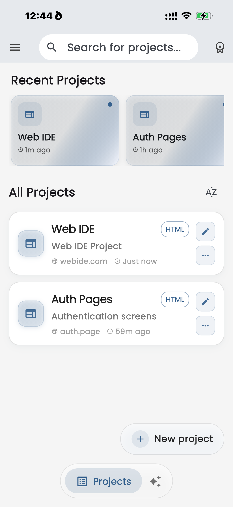
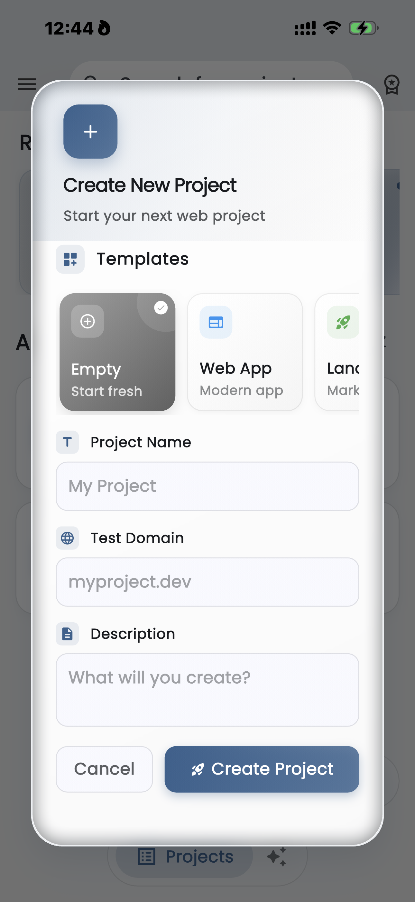
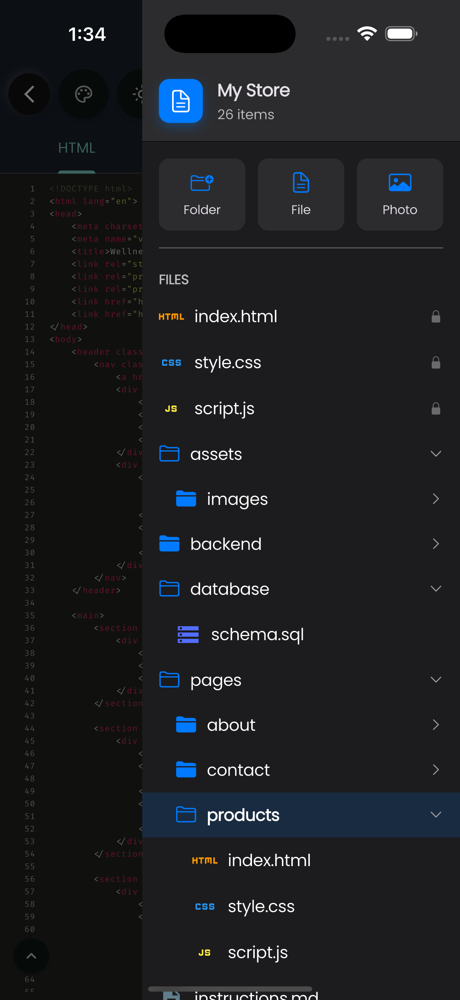
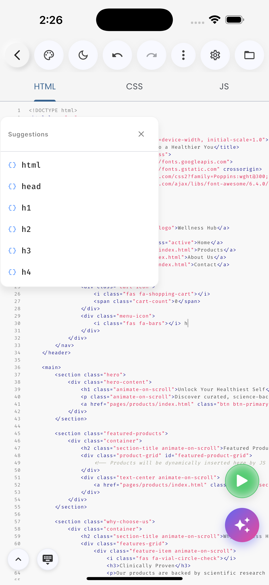
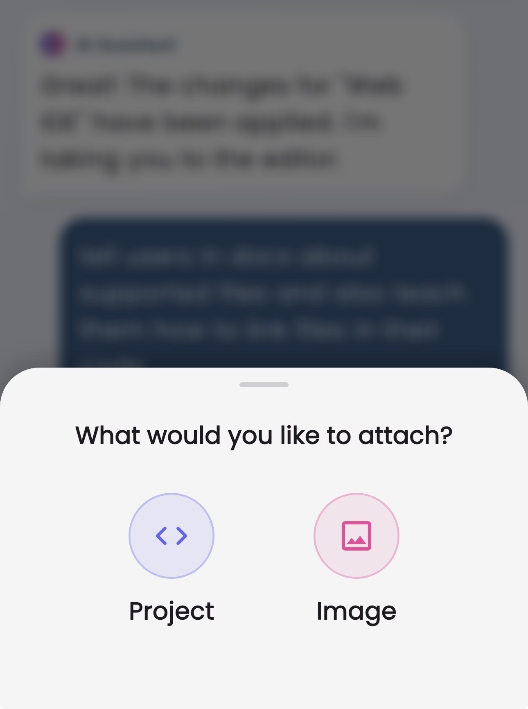
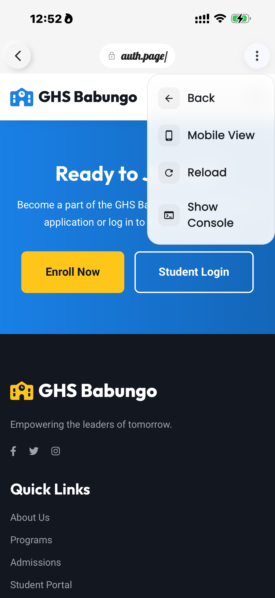

Web IDE is a professional-grade mobile code editor designed to make web development accessible, fast, and powerful on touch devices. It combines a robust file system, a feature-rich code editor, and a real-time preview engine into a single app.
For Learners
Start coding HTML/CSS instantly without setting up complex environments. Use the AI to explain code and fix errors.
For Pros
Prototype ideas on the go. Fix bugs from anywhere. Export clean, standard code to your desktop workflow.
Installation
Web IDE is available on iOS (App Store) and Android (via APK/stores). It is optimized for both smartphones and tablets.
The current Android version is outdated because the Android version of the app was discontinued.
We will take time to update it so it matches the latest iOS version.
Interface Overview
The Web IDE interface is divided into Four main areas designed to maximize screen real estate.

1
Home / Dashboard
Your central hub. Here you see all your projects as cards. Tap a project to open it, or use the + button to create new ones.
2
The Editor
When you open a file, you enter the Editor. It features line numbers, syntax highlighting, and a custom toolbar above your keyboard for common coding characters.
3
File Explorer
Swipe from the left (or tap the menu icon) inside a project to reveal the file tree. This is where you create, rename, and organize your files.
4
Live Preview
Click the play icon in the editor to preview your code. The live preview shows your website's frontend instantly, letting you see changes as you make them for rapid development and debugging.
Creating Projects
Web IDE isolates code into "Projects". Each project is a self-contained environment on your device.

Tap the + button on the Home screen.
Choose a template from the library.
Available Templates:
Empty: A clean slate to start fresh.
Web App: Modern app structure.
Landing Page: Marketing ready.
Note: You will not see individual files (like index.html) in the selection screen. These fully compiled templates generate the necessary file structure automatically upon creation.
Give your project a unique name.
Tap Create Project.
File & Folder Structure
Organization is key. Web IDE supports full folder nesting. To manage your files:

Actions
Create FileTap the "New File" icon in the explorer. Be sure to add an extension (e.g., .html, .css).
Create FolderTap the "New Folder" icon. You can then drag files into it or create files inside it.
Rename/DeleteLong-press any file or folder to bring up the context menu.
Note: The root index.html is the main entry point for the Live Preview. Do not move it if you want the "Play" button to work instantly.
Linking Your Files
To make your website work, you need to connect your HTML, CSS, and JavaScript files. This is done using specific tags within your HTML file.
Linking CSS
To apply your styles, add a <link> tag inside the <head> section of your HTML file. The href attribute should point to your CSS file.
To add interactivity, add a <script> tag just before the closing </body> tag. The src attribute points to your JavaScript file. It's best practice to place scripts at the end of the body to ensure the HTML content loads first.
When linking between different HTML pages, you must use relative paths. Use ../ to go up one directory level. This is crucial for navigating your site's structure.
From: index.html (at the project root)
To: pages/about/index.html
<a href="pages/about/index.html">About Us</a>
From: pages/about/index.html
To: index.html (at the project root)
<a href="../../index.html">Go Home</a>
Note: The first ../ navigates up to the pages directory, and the second ../ navigates up to the root directory where index.html is located.
Backup & Sharing
Web IDE uses a specialized .webide file format to keep your projects secure and portable.
Creating a Backup
The app compiles your entire project—files, folders, and assets—into a single .webide file. When you export or back up a project, you select where to save this file on your device (e.g., Files app, iCloud, Google Drive).
Critical Warnings
Do NOT Rename: Never try to rename the file extension or the file itself outside of the app. Doing so will corrupt the file.
Do NOT Edit Externally: Do not attempt to open the .webide file in a text editor or rewrite its content. Any external modification will corrupt the file structure.
Proprietary Format: This is a safe file container that only the Web IDE app can read.
Collaboration Workflow
You can treat the .webide file like a repository (similar to GitHub). It is designed for sharing:
Share: Send the .webide file to a colleague or friend.
Edit: They can open the file in their Web IDE app to work on the project.
Return: Once finished, they can back up the project again (compiling a new .webide file) and send it back to you.
Deployment & Hosting
Ready to show the world? Here is how to take your project from Web IDE to the live web.
1. Export Your Code
First, you need to get the raw files out of the app.
Open your project in Web IDE.
Tap the Export button in the project menu.
Choose "Export as ZIP". This bundles all your HTML, CSS, and images into a standard archive.
Save the ZIP file to your device (Files app, Google Drive, etc.).
2. Prepare Files
Locate the ZIP file you just saved and unzip (extract) it. You will now have a folder containing standard web files (index.html, style.css, etc.) that any web server can read.
3. Choose a Host
GitHub Pages
Free and popular. Create a repository, upload your unzipped files, and enable "GitHub Pages" in settings.
Vercel / Netlify
Easiest for drag-and-drop. Simply drag your unzipped project folder onto their dashboard to deploy instantly.
WordPress
Advanced. You can upload your HTML files to your hosting server via FTP, or convert your design into a WordPress theme.
Writing Code
The editor is built for speed. It includes:

Autocomplete
Intelligent suggestions for HTML tags, CSS properties, and JS methods.
Auto-Close Tags
Type <div> and the editor automatically adds </div>.
Syntax Highlighting
Color-coded text for easier readability across all supported languages.
Format Code
One-tap formatting to clean up indentation and spacing (Prettier-powered).
AI Assistant
Pro Feature
Web IDE integrates a powerful Large Language Model (LLM) directly into the workspace.

What can it do?
Generate Code: "Create a sticky navbar with a logo on the left."
Debug: "Why is my flexbox not centering the items?"
Refactor: "Rewrite this function to be more efficient."
How to use
Tap the AI Icon (Sparkles) in the bottom menu from the Home Screen.
Attach a project to the chat, type your prompt in plain English, and send it.
Review the code generated by the AI.
Tap Insert to place the code at your cursor's current position.
Live Preview
See your changes instantly. The Live Preview runs a local web server on your device, simulating a real browser environment.

Play Button
Located at the top right. Tapping this splits the screen (on tablets) or opens a new view (on phones) rendering your index.html.
Dark/Light Mode Testing
The preview respects your system preferences, allowing you to test @media (prefers-color-scheme) CSS.
Console & Debugging
Developing on mobile doesn't mean flying blind. Web IDE captures browser logs.
> console.log("Data loaded", data);
{ id: 1, name: "Test" }
> Uncaught ReferenceError: x is not defined
at script.js:14:2
To access the console, tap the Terminal Icon while in Live Preview mode.
Supported Languages
HTML5
Full Support
CSS3
Full Support
JavaScript
ES6+ Support
TypeScript
Editor Only
PHP
Editor Only
Python
Editor Only
Web IDE provides different levels of support. "Full Support" means the code can be edited and executed in the Live Preview. "Editor Only" means the app provides syntax highlighting and tools, but the code requires a separate server to run and cannot be previewed directly.
Web IDE is primarily a Client-Side development environment.
HTML/CSS/JS: Runs natively in the Live Preview. You see exactly what you code.
PHP/Python/SQL: These are supported for editing. You can write the code with full syntax highlighting and autocomplete, but they require a server to run. The Live Preview cannot execute PHP or Python server-side logic directly.
For full stack projects, we recommend using Web IDE to write your code, then exporting it to a server environment for deployment.